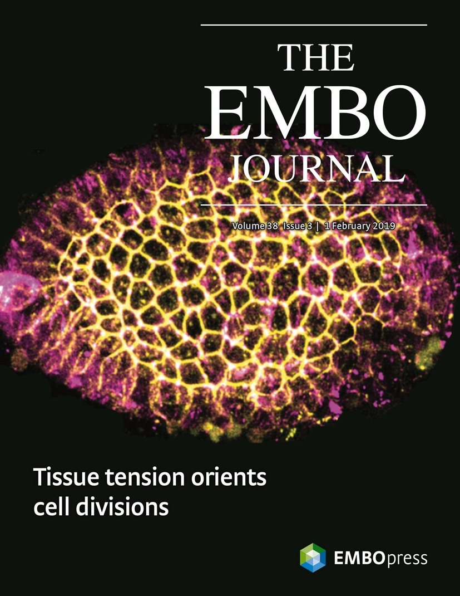
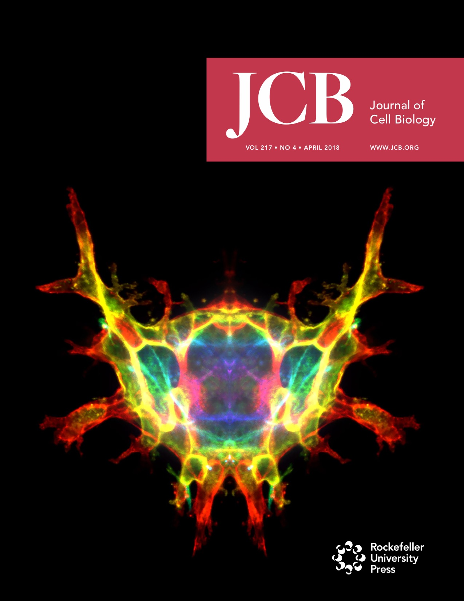

Upcoming
- 9/12/21-9/15/21 Patrick will be giving a talk at the Septin 2021 Meeting in Berlin - This is the rescheduled meeting originally planned for September 2020
5/27/20-5/29/20**Postponed - Rescheduled date TBD** Patrick will be giving a talk at the American Chemical Society Regional Meeting (CERM2020) in Columbus, OH- 12/8/20 Stefano will be giving a talk about his work on the mechanosensitivity of the multimodular LIM domain protein testin in a subgroup at Cell Bio Virtual 2020. His talk is from 1:47-2:07 PM EST.
Past Events
- 9/1/20 We're very excited that Alexia Caillier is going to be joining the lab as a postdoc in February 2021! Alexia is coming from Marc-Etienne Huot's lab at Laval University in Quebec, Canada where she works on protein translation at sites of adhesion. She defends in January and we're looking forward to her joining us soon after!
- 7/24/20 Our most recent paper with the Fowell lab is now online at Frontiers in Immunology!
- 7/19/20 We're very excited that Lee Troughton, PhD is going to be joining the lab as a postdoc in February 2021! Lee is coming from Kevin Hamill's lab at the University of Liverpool, UK where he worked on laminins, specifically the LaNt α31 isoform and it's impact on tumor invasiveness.
- 6/9/20 Our paper with Deborah Fowell's lab at the University of Rochester was just accepted at Frontiers in Immunology. Nick from our lab helped do all the in vitro assays to show how fibronectin regulates CD4+ T cell migration. Congrats to Ninoshka and Nick!
- 6/2/20 Our collaboration paper that was just published in PNAS was chosen for the cover of this week's issue! Congratulations Emma!

- 5/21/20 Our newest paper, a collaboration with Dabid Topham's lab at URMC is out in PNAS. It's all about the role of CD103 and CD49a integrins in modulating adhesion of TRM cells. Read it here!
- 5/13/20 Patrick gave a seminar to the Department of Molecular Pharmacology & Neuroscience at Loyola University Chicago today.
- 3/13/20 The Chicago Cytoskeleton meeting Patrick was going to speak at was canceled due to the Covid-19 precautions. This was a sensible decision made for the safety of all and we look forward to the next meeting!
- 03/2/20 Patrick gave an internal seminar for the Integrative Cell Biology Program within the Stritch School of Medicine
- 02/24/20 Shreya has joined the lab as graduate student in the Biochemistry & Molecular Biology Track. Welcome Shreya!
- 2/14/20 Our recent collaboration with David Topham's lab about the role of different integrins in Tissue Resident Memory T cells is up on bioRxiv! Congratulations Emma!
- 2/7/20 Our new protocol paper with the Gardel Lab about using the optogenetic RhoA system is out in Current Protocols in Cell Biology!
- 1/6/19 Maggie Utgaard has joined our group to do a joint Masters project with the Beach Lab. Welcome Maggie!
- 12/7/19-12/11/19 Patrick and Stefano will be at the ASCB/EMBO meeting in Washington, DC. Come check out Stefano's poster Monday afternoon (P1506/B640) to see our latest results on the mechanosensitivity of the LIM domain protein testin!
- 12/1/19-12/6/19 Patrick gave a talk at the Material Research Society Fall Meeting
- 11/2/19 Patrick and Nick were at the 5th Annual Immune Imaging Symposium supported by the P01 project grant.
- 10/30/19 Patrick and collaborator Jordan Beach were awarded a James & Carolyn Beck Equipment Grant from the Loyola University Chicago Cardiovascular Research Institute. The funds will be used to support the purchase of a Ring TIRF system to be installed on the new Oakes Lab microscope!
- 10/17/19 Patrick and the lab received funding from the NIH National Institute of Allergy and Infectious Diseases (NIAID) as part of a program project grant headed by Deborah Fowell at the University of Rochester Medical Center! Patrick's portion of the grant focuses on the mechanics of immune cell migration. The grant includes funding for a postdoctoral position so be on the look out for a job advertisement soon!
- 9/18/19 Patrick gave the Biophysics Colloquium at Cornell University
- 8/1/19 A new chapter starts for the lab as we've moved to Loyola University Chicago Stritch School of Medicine in the Department of Cell & Molecular Physiology! We'll be hiring so anyone interested in joining our group should reach out!
- 6/6/19 Our collaboration with Tamara Bidone and Greg Voth is out in PLoS Computational Biology! This model builds on our recent PNAS paper about the role of integrin bonds in substrate stiffness sensing. Here we look at how different bond kinetics in integrins can facilitate adhesion formation.
- 6/5/19 Nick successfully passed his qualifying exam today! Way to go Nick!
- 5/28/19 We have two undergraduates working with us this summer as part of an REU program. Lydia is a University of Rochester student majoring in Biochemistry and Maham is a Reed College student majoring in Physics. Welcome Lydia and Maham!
- 5/9/19 Patrick gave a talk in the Department of Anatomy & Cell Biology at the Kansas University Medical Center and got to hang out with Prachee Avasthi!
Beyond excited to have my brilliant friend & fellow actin aficionado @pwoakes here for a visit! pic.twitter.com/vkORSFpPBT
— Prachee Avasthi (@PracheeAC) May 9, 2019 - 4/5/19 The first Central NY Cytoskeleton Meeting! Patrick is organizing with Jessica Henty-Ridilla from SUNY Upstate Medical University and Scott Forth from RPI. Details can be found here!
- 3/27/19 Patrick gave a seminar in the Department of Microbiology & Immunology at URMC
- 3/22/19 Patrick gave a talk in the Department of Physics at Syracuse University
- 3/20/19 Patrick gave a seminar at the Aab Cardiovascular Research Insitute at the University of Rochester Medical Center
- 3/19/19 Our collaboration with Sarah Barger and Mira Krendel from SUNY Upstate was published in Nature Communications today! Nick helped do all the force measurements of the frustrated phagocytosis. Congratulations Sarah, Mira and Nick!
- 3/11/19 Gabrielle Kosoy has joined the lab for her rotation! Welcome Gabrielle!
- 2/25/19 Registration is open for the first Central NY Cytoskeleton Meeting!. Register HERE

- 2/18/19 Patrick gave a talk in the Department of Cell & Molecular Physiology at the Loyola University Stritch School of Medicine
- 2/6/19 Our new work on integrin kinetics during early stage adhesion assembly is now posted on bioRxiv! This is a follow-up work to our recent PNAS paper in collaboration with Tamara Bidone and Greg Voth from U Chicago.
- 2/1/19 Our collaboration with the Bergstralh lab was chosen for the cover of EMBO Journal. Congratulations Tara!
 - 1/27/19-2/1/19 Patrick gave a talk at the Gordon Research Conference on Complex and Adaptive Material Systems. Austin presented a poster on modeling septin filaments too!
- 1/28/19 Lydia Petricca, an undergraduate biochemistry major, has joined the lab. Welcome Lydia!
- 1/2/19 Ashlin James Poruthoor has joined the lab for a rotation. Welcome Ashlin!
- 12/8/18-12/12/18 The lab will be at the Annual American Society for Cell Biology Meeting in San Diego!
- Posters from the lab
- Monday Poster Board B605 / P2423 - Stefano Sala - "Mechanosensitivity mechanisms of the LIM domain protein testin"
- Tuesday Poster Board B637 / P3288 - Nick Reilly - "αVβ3 Integrin Expression Regulates CD4+ T Cell Migration Phenotypes"
- Sunday Minisymposium 2 - M19 - Sarah Barger - "Membrane-Cytoskeleton Mechanical Feedback Mediated by Myosin 1 Controls Phagocytic Efficiency"
Our Collaborators
- 11/26/18 Our collaboration with the Bergstralh lab has been published at EMBO Journal. Congratulations everyone! Check it out here!
- 11/3/18 Patrick gave a talk at the 4th Annual Immune Imaging Symposium!
- 10/19/18 Patrick gave a talk in the Department of Molecular, Cellular, and Developmental Biology at the University of Michigan
- 10/2/18 Our collaborators in the Krendel Lab from SUNY Upstate have posted their manuscript to bioRxiv. Sarah, the lead author, did some of the experiments in the manuscript with the help of Nick in our lab.
- 9/4/18 We have a new rotation student from the Department of Biology. Welcome Mingyi!
- 8/2/18 Lab lunch at Dinosaur Bar-B-Que to celebrate Denis finishing her REU with us!

- 7/30/18 Denis is featured in article highlighting summer REU students at Rochester.
- 6/1/18 Patrick's CAREER Award was highlighted on the Department of Physics & Astronomy website. Read the article here.
- 5/30/18 Denis Ortega Ioni from Florida International University has joined the lab as a summer REU student. Welcome Denis!
- 5/23/18 Check out Patrick's new review in Current Opinion in Cell Biology!
- 5/18/18 Check out Patrick's News & Views article in Nature Immunology with Deb Fowell from URMC talking about T cell motility
- 5/11/18 Austin has received a Donald M. and Janet C. Barnard Fellowship from the University of Rochester. This award recognizes his strong research output and his commitment to mentoring and outreach. Congratulations Austin!
- 5/8/18 Dr. Stefano Sala has joined the lab as a postdoc. Stefano is a biochemist coming from the University of Ghent in Belgium. Welcome Stefano!
- 4/23/18 Patrick will be speaking at Genetics Day at the University of Rochester Medical Center
- 4/2/18 Recent work the lab contributed to was chosen for the cover of the Journal of Cell Biology! They also published a short podcast video describing how it builds on a previous paper from Patrick.

- 3/1/18 Patrick received an NSF CAREER award!
- 2/27/18 Check out our new paper about myosin-independent mechanosensing that was just published in PNAS!
- 2/5/18 Check out a new paper that the lab contributed to that was just published in Journal of Cell Biology!
- 1/15/18 Patrick has joined the editorial board of the journal Cytoskeleton
- 12/2/17-12/6/17 The lab will be at the American Society for Cell Biology annual meeting in Philadelphia
- Posters from the lab
- Sunday Poster Board B654 / P1639 - Nick Reilly - "Effect of influenza infection on epithelial monolayer integrity"
- Monday Poster Board B646 / P2495 - Austin Skeeters - "The lamellipodium is a myosin independent mechanosensor"
- Sunday Poster Board B813 / P1795 "Breaking Hertwig's Rule in the Drosophila Follicular Epithelium"
Our Collaborators
- 10/18/17 Some of our microscope images were put up on the Jumbotrons at the University of Florida as part of the Soft Matter Symposium! So cool to see a 100 ft cell!

- 10/17/17-10/19/17 Patrick gave an invited talk at the Soft Matter Symposium at the University of Florida
- 9/26/17 Patrick gave a talk at the Center for Studies in Physics and Biology at the Rockefeller University
- 9/15/17 Patrick gave a talk at the Institute of Science and Technology Austria
- 9/11/17-9/14/17 Patrick gave an invited talk at the Abercrombie Meeting 2017 being held in Oxford, UK
- 9/8/2017 Our new paper about a myosin independent mechanosensing mechanism is on the BioRxiv!
- 8/19/2017 Our collaboration with the Bergstralh lab on spindle orientation in proliferating epithelium is on BioRxiv
- 7/1/2017 The lab and our collaborators (Biteau Lab - Biomedical Genetics and Bergstralh Lab - Biology), were awarded a SAC Incubator Award from the School of Medicine & Dentistry!
- 6/18/17-6/23/17 Patrick gave an invited talk at the Cell Contact & Adhesion Gordon Conference
- 6/12/17 Our paper on optogenetic control of RhoA is now out in Nature Communications!
- 4/5/17 Patrick gave a talk at the BioQuant Seminar series at the University of Heidelberg
- 4/2/17-4/8/17 Patrick was an invited speaker at the Mechanisms of actin-dependent force generation course at the EMBL

- 3/3/17 Check out our new paper in Scientific Reports on the role of cholesterol in cardiomyocytes!
- 2/22/17 Check out our new paper in Molecular Biology of the Cell on contact guidance of migration!
- 2/2/17 Patrick gave a seminar in the Department of Biomedical Genetics - 1:45 PM in KMRB 2.9654
- 1/31/17 Patrick gave a talk at the Seeds for Collaboration event sponsored by School of Medicine and Dentistry, and the Ernest J. Del Monte Institute for Neuromedicine
- 12/3/16-12/7/26 Patrick gave an invited talk and a poster at the American Society of Cell Biology annual meeting in San Francisco.
Poster: Sunday Afternoon, Board B1230
Talk: Tuesday 5:35 PM, Room 305 - Minisymposium 14: Cell Mechanics - 11/8/16 Patrick gave a seminar in the Department of Biomedical Engineering - Sloan Auditorium, Goergen Hall 101 at 8:30 AM
- 11/2/16 Patrick gave a colloquium in the Department of Physics at the Rochester Institute of Technology
- 10/25/16 Patrick presented at the Biophysics retreat for the Department of Biochemistry & Biophysics
- 10/10/16-10/14/16 Patrick gave an invited talk at a Banff International Research Station (BIRS) Workshop - Modeling and Quantifying Cell Function: 25 years of Cell Mechanobiology
- 10/3/16 Patrick gave the Donut Talk Seminar in the Department of Biology - Lander Auditorium, Hutchinson Hall 140 at 12 PM
- 8/25/16 Check out our new paper in Nature Communications about contraction in disordered cytoskeletal networks!
- 8/2/16 Patrick presented at the Physical Models of Biological Systems workshop, sponsored by the University of Rochester Departments of Physics & Astronomy and Mechanical Engineering. Bausch & Lomb 106 1-5:30 PM
- 8/1/16 Lab website is live!

{kind=link}